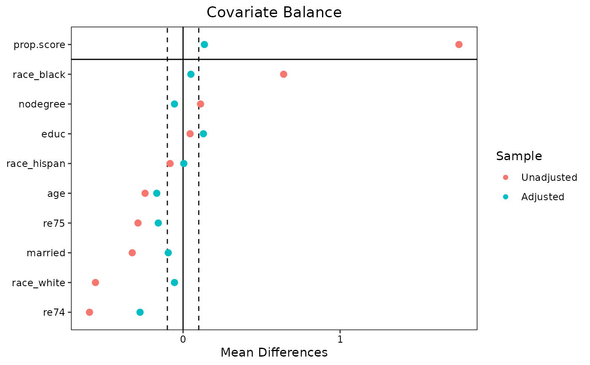
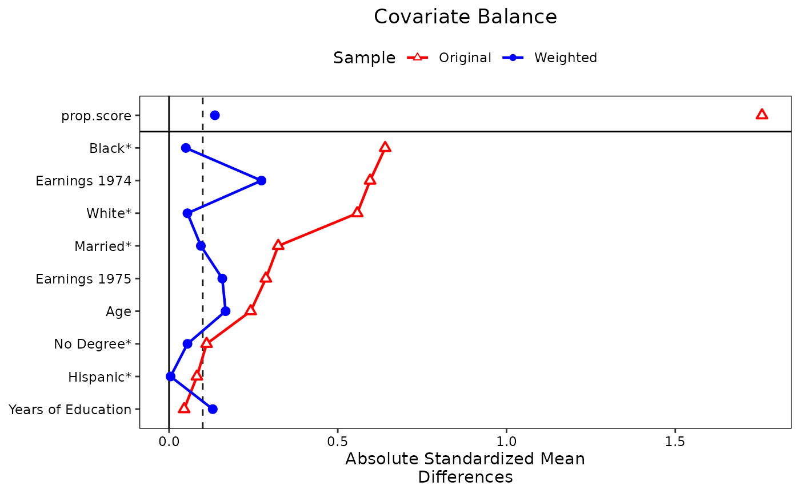

Generates a "Love" plot graphically displaying covariate balance before and after adjusting. Options are available for producing publication-ready plots. Detailed examples are available in vignette("love.plot").
Usage
love.plot(
x,
stats,
abs,
agg.fun = NULL,
var.order = NULL,
drop.missing = TRUE,
drop.distance = FALSE,
thresholds = NULL,
line = FALSE,
stars = "none",
grid = FALSE,
limits = NULL,
colors = NULL,
shapes = NULL,
alpha = 1,
size = 3,
wrap = 30,
var.names = NULL,
title,
sample.names,
labels = FALSE,
position = "right",
themes = NULL,
...
)Arguments
- x
the valid input to a call to
bal.tab()(e.g., the output of a preprocessing function). Other arguments that would be supplied tobal.tab()can be entered with.... Can also be abal.tabobject, i.e., the output of a call tobal.tab(). See Examples. Ifxis not abal.tabobject,love.plot()callsbal.tab()with the arguments supplied.- stats
character; which statistic(s) should be reported. Seestatsfor allowable options. For binary and multi-category treatments, "mean.diffs" (i.e., mean differences) is the default. For continuous treatments, "correlations" (i.e., treatment-covariate Pearson correlations) is the default. Multiple options are allowed.- abs
logical; whether to present the statistic in absolute value or not. For variance ratios, this will force all ratios to be greater than or equal to 1. Ifxis abal.tabobject,love.plot()might ignoreabsdepending on the originalbal.tab()call. If unspecified, uses whatever was used in the call tobal.tab().- agg.fun
if balance is to be displayed across clusters or imputations rather than within a single cluster or imputation, which summarizing function ("mean", "max", or "range") of the balance statistics should be used. If "range" is entered,
love.plot()will display a line from the min to the max with a point at the mean for each covariate. Abbreviations allowed; "range" is default. Remember to setwhich.<ARG> = .none(where<ARG>is the grouping argument, such asclusterorimp) to useagg.fun. See Details.- var.order
a
characterorlove.plotobject; how to order the variables in the plot. See Details.- drop.missing
logical; whether to drop rows for variables for which the statistic has a value ofNA, for example, variance ratios for binary variables. IfFALSE, there will be rows for these variables but no points representing their value. Default isTRUE, so that variables with missing balance statistics are absent. When multiplestatsare requested, only variables withNAs for allstatswill be dropped ifdrop.missing = TRUE. This argument used to be calledno.missing, and that name still works (but has been deprecated).- drop.distance
logical; whether to ignore the distance measure (if there are any) in plotting.- thresholds
numeric; an optional value to be used as a threshold marker in the plot. Should be a named vector where each name corresponds to the statistic for which the threshold is to be applied. See example atstats. Ifxis abal.tabobject and a threshold was set in it (e.g., withthresholds), its threshold will be used unless overridden using thethresholdargument inlove.plot().- line
logical; whether to display a line connecting the points for each sample.- stars
when mean differences are to be displayed, which variable names should have a star (i.e., an asterisk) next to them. Allowable values are "none", "std" (for variables with mean differences that have been standardized), or "raw" (for variables with mean differences that have not been standardized). If "raw", the x-axis title will be "Standardized Mean Differences". Otherwise, it will be "Mean Differences". Ignored when mean difference are not displayed. See Details for an explanation of the purpose of this option.
- grid
logical; whether gridlines should be shown on the plot. Default isFALSE.- limits
numeric; the bounds for the x-axis of the plot. Must a (named) list of vectors of length 2 in ascending order, one for each value ofstatsthat is to have limits; e.g.,list(m = c(-.2, .2)). If values exceed the limits, they will be plotted at the edge.- colors
the colors of the points on the plot. See 'Color Specification' at
graphics::par()or theggplot2aesthetic specifications page. The first value corresponds to the color for the unadjusted sample, and the second color to the adjusted sample. If only one is specified, it will apply to both. Defaults to the default ggplot2 colors.- shapes
the shapes of the points on the plot. Must be one or two numbers between 1 and 25 or the name of a valid shape. See the
ggplot2aesthetic specifications page for valid options. Values 15 to 25 are recommended. The first value corresponds to the shape for the unadjusted sample, and the second color to the adjusted sample. If only one is specified, it will apply to both. Defaults to 19 ("circle filled").- alpha
numeric; the transparency of the points. Seeggplot2::scale_alpha().- size
numeric; the size of the points on the plot. Defaults to 3. In previous versions, the size was scaled by a factor of 3. Nowsizecorresponds directly to thesizeaesthetic inggplot2::geom_point().- wrap
numeric; the number of characters at which to wrap axis labels to the next line. Defaults to 30. Decrease this if the axis labels are excessively long.- var.names
an optional object providing alternate names for the variables in the plot, which will otherwise be the variable names as they are stored. This may be useful when variables have ugly names. See Details on how to specify
var.names.var.names()can be a useful tool for extracting and editing the names from thebal.tabobject.- title
character; the title of the plot.- sample.names
character; new names to be given to the samples (i.e., in place of "Unadjusted" and "Adjusted"). For example, when matching it used, it may be useful to enterc("Unmatched", "Matched").- labels
logicalorcharacter; labels to give the plots when multiplestatsare requested. IfTRUE, the labels will be capital letters. Otherwise, must be a string with the same length asstats. This can be useful when the plots are to be used in an article.- position
the position of the legend. When
statshas length 1, this can be any value that would be appropriate as an argument tolegend.positioninggplot2::theme(). Whenstathas length greater than 1, can be one of "none", "left", "right", "bottom", or "top".- themes
an optional list of
themeobjects to append to each individual plot. Each entry should be the output of a call toggplot2::theme()in ggplot2. This is a way to customize the individual plots when multiplestatsare requested since the final output is not a manipulableggplotobject. It can be used with length-1stats, but it probably makes more sense to just add thetheme()call afterlove.plot().- ...
additional arguments passed to
bal.tab()or options for display of the plot. The following related arguments are currently accepted:use.gridwhether to use
gridExtra::arrangeGrob()ingridExtrato make the plot whenstatshas length 1. See section Value.disp.subclasswhether to display individual subclasses if subclassification is used. Overrides the
disp.subclassoption in the originalbal.tab()call ifxis abal.tabobject.star_charcharacter; whenstarsare used, the character that should be the "star" next to the starred variables. The default is"*"."†"or"\u2020"(i.e., dagger) might be appealing as well.
Additionally, any of the
which.arguments used with clustered or multiply imputed data or longitudinal or multi-category treatments can be specified to display balance on selected groupings. Set to.noneto aggregate across groups (in whichagg.funcomes into effect) and set to.allto view all groups. See display-options for options, and seevignette("segmented-data")for details and examples.
Value
When only one type of balance statistic is requested, the returned object is a standard ggplot object that can be manipulated using ggplot2 syntax. This facilitates changing fonts, background colors, and features of the legend outside of what love.plot() provides automatically.
When more than one type of balance statistic is requested, the plot is constructed using gridExtra::arrangeGrob() in gridExtra, which arranges multiple plots and their shared legend into one plot. Because the output of arrangeGrob is a gtable object, its features cannot be manipulated in the standard way. Use the themes argument to change theme elements of the component plots. The original plots are stored in the "plots" attribute of the output object.
Details
love.plot can be used with clusters, imputations, and multi-category and longitudinal treatments in addition to the standard case. Setting the corresponding which. argument to .none will aggregate across that dimension. When aggregating, an argument should be specified to agg.fun referring to whether the mean, minimum ("min"), or maximum ("max") balance statistic or range ("range", the default) of balance statistics for each covariate should be presented in the plot. See vignette("segmented-data") for examples.
With subclasses, balance will be displayed for the unadjusted sample and the aggregated subclassified sample. If disp.subclass is TRUE, each subclass will be displayed additionally as a number on the plot.
Variable order using var.order
The order that the variables are presented in depends on the argument to var.order. If NULL, the default, they will be displayed in the same order as in the call to bal.tab(), which is the order of the underlying data set. If "alphabetical", they will be displayed in alphabetical order. If "unadjusted", they will be ordered by the balance statistic of the unadjusted sample. To order by the values of the adjusted sample, "adjusted" can be supplied if only one set of weights (or subclasses) are specified; otherwise, the name of the set of weights should be specified.
If multiple stats are requested, the order will be determined by the first entry to stats (e.g., if both "mean.diffs" and "ks.statistics" are requested, and var.order = "unadjusted", the variables will be displayed in order of the unadjusted mean differences for both plots). If multiple plots are produced simultaneously (i.e., for individual clusters or imputations), var.order can only be NULL or "alphabetical".
If a love.plot object is supplied, the plot being drawn will use the variable order in the supplied love.plot object. This can be useful when making more than one plot and the variable order should be the same across plots.
Variable names using var.names
The default in love.plot() is to present variables as they are named in the output of the call to bal.tab(), so it is important to know this output before specifying alternate variable names when using var.names, as the displayed variable names may differ from those in the original data.
There are several ways to specify alternate names for presentation in the displayed plot using the var.names argument by specifying a list of old and new variable names, pairing the old name with the new name. You can do this in three ways: 1) use a vector or list of new variable names, with the names of the values the old variable names; 2) use a data frame with exactly one column containing the new variable names and the row names containing the old variable names; or 3) use a data frame with two columns, the first (or the one named "old") containing the old variable names and the second (or the one named "new") containing the new variable names. If a variable in the output from bal.tab() is not provided in the list of old variable names, love.plot() will use the original old variable name.
love.plot() can replace old variables names with new ones based on exact matching for the name strings or matching using the variable name components. For example, if a factor variable "X" with levels "a", "b", and "c" is displayed with love.plot(), the variables "X_a", "X_b", and "X_c" will be displayed. You can enter replacement names for all three variables individually with var.names, or you can simply specify a replacement name for "X", and "X" will be replaced by the given name in all instances it appears, including not just factor expansions, but also polynomials and interactions in int = TRUE in the original bal.tab() call. In an interaction with another variable, say "Y", there are several ways to replace the name of the interaction term "X_a * Y". If the entire string ("X_a * Y") is included in var.names, the entire string will be replaced. If "X_a" is included in var.names, only it will be replaced (and it will be replaced everywhere else it appears). If "X" is included in var.names, only it will be replaced (and it will be replaced everywhere else it appears). See example at var.names().
Stars and the x-axis label with mean differences
When mean differences are to be displayed, love.plot() attempts to figure out the appropriate label for the x-axis. If all mean differences are standardized, the x-axis label will be "Standardized Mean Differences". If all mean differences are raw (i.e., unstandardized), the x-axis label will be "Mean Differences". Otherwise, love.plot() turns to the stars argument. If "raw", the x-axis label will be "Standardized Mean Differences" (i.e., because un-starred variables have standardized mean differences displayed). If "std", the x-axis label will be "Mean Differences" (i.e., because un-starred variables have raw mean differences displayed). If "none", the x-axis label will be "Mean Differences" and a warning will be issued recommending the use of stars.
The default is to display standardized mean differences for continuous variables, raw mean differences for binary variables, and no stars, so this warning will be issued in most default uses of love.plot(). The purpose of this is to correct behavior of previous versions of cobalt in which the default x-axis label was "Mean Differences", even when standardized mean differences were displayed, yielding a potentially misleading plot. This warning requires the user to think about what values are being displayed. The idea of using stars is that the user can, in a caption for the plot, explain that variables with an asterisk have standardized (or raw) mean differences display, in contrast to un-starred variables.
Note
love.plot can also be called by using plot() or autoplot() on a bal.tab object. If used in this way, some messages may appear twice. It is recommended that you just use love.plot() instead.
Examples
data("lalonde", package = "cobalt")
## Propensity score weighting
w.out1 <- WeightIt::weightit(treat ~ age + educ + race + married +
nodegree + re74 + re75,
data = lalonde)
love.plot(w.out1, thresholds = c(m = .1), var.order = "unadjusted")
#> Warning: Standardized mean differences and raw mean differences are present in
#> the same plot. Use the `stars` argument to distinguish between them and
#> appropriately label the x-axis. See `?love.plot` for details.

## Using alternate variable names
v <- data.frame(old = c("age", "educ", "race_black", "race_hispan",
"race_white", "married", "nodegree", "re74",
"re75", "distance"),
new = c("Age", "Years of Education", "Black",
"Hispanic", "White", "Married", "No Degree",
"Earnings 1974", "Earnings 1975",
"Propensity Score"))
love.plot(w.out1, stats = "m", threshold = .1,
var.order = "unadjusted", var.names = v)
#> Warning: Standardized mean differences and raw mean differences are present in
#> the same plot. Use the `stars` argument to distinguish between them and
#> appropriately label the x-axis. See `?love.plot` for details.
#Using multiple stats
love.plot(w.out1, stats = c("m", "ks"),
thresholds = c(m = .1, ks = .05),
var.order = "unadjusted", var.names = v, stars = "raw",
position = "bottom", wrap = 20)
#Changing visual elements
love.plot(w.out1, thresholds = c(m = .1),
var.order = "unadjusted", var.names = v, abs = TRUE,
shapes = c("triangle filled", "circle"),
colors = c("red", "blue"), line = TRUE,
grid = FALSE, sample.names = c("Original", "Weighted"),
stars = "raw", position = "top")
